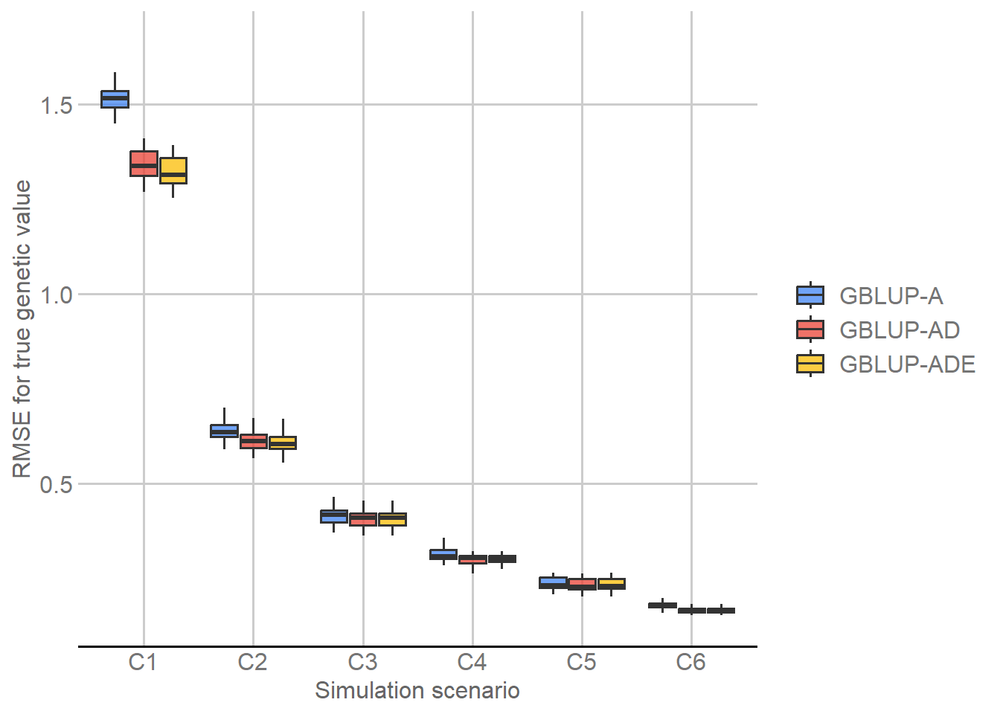

Simulated data: GBLUP A, AD, and ADE
Weverton Gomes da Costa
2026-11-16
Last updated: 2026-11-16
Checks: 7 0
Knit directory:
Genomic-Prediction-using-Regularized-Artificial-Neural-Networks/
This reproducible R Markdown analysis was created with workflowr (version 1.7.2). The Checks tab describes the reproducibility checks that were applied when the results were created. The Past versions tab lists the development history.
Great! Since the R Markdown file has been committed to the Git repository, you know the exact version of the code that produced these results.
Great job! The global environment was empty. Objects defined in the global environment can affect the analysis in your R Markdown file in unknown ways. For reproduciblity it’s best to always run the code in an empty environment.
The command set.seed(20260821) was run prior to running
the code in the R Markdown file. Setting a seed ensures that any results
that rely on randomness, e.g. subsampling or permutations, are
reproducible.
Great job! Recording the operating system, R version, and package versions is critical for reproducibility.
Nice! There were no cached chunks for this analysis, so you can be confident that you successfully produced the results during this run.
Great job! Using relative paths to the files within your workflowr project makes it easier to run your code on other machines.
Great! You are using Git for version control. Tracking code development and connecting the code version to the results is critical for reproducibility.
The results in this page were generated with repository version 34a5e24. See the Past versions tab to see a history of the changes made to the R Markdown and HTML files.
Note that you need to be careful to ensure that all relevant files for
the analysis have been committed to Git prior to generating the results
(you can use wflow_publish or
wflow_git_commit). workflowr only checks the R Markdown
file, but you know if there are other scripts or data files that it
depends on. Below is the status of the Git repository when the results
were generated:
Ignored files:
Ignored: .Rhistory
Ignored: .Rproj.user/
Ignored: .github/
Ignored: .local/
Ignored: data/dados_reais/geno_real.rds
Ignored: output/real/ann/figures/
Ignored: output/real/audit/figures/
Ignored: output/real/comparison/figures/
Ignored: output/real/gblup/figures/
Ignored: output/real/phenotype/figures/
Ignored: output/simulated/gblup/figures/
Ignored: output/simulated/m01/
Ignored: output/simulated/m02/
Ignored: output/simulated/m03/
Ignored: output/simulated/m04/
Ignored: output/simulated/m05/
Ignored: renv/library/
Ignored: renv/staging/
Note that any generated files, e.g. HTML, png, CSS, etc., are not included in this status report because it is ok for generated content to have uncommitted changes.
These are the previous versions of the repository in which changes were
made to the R Markdown (analysis/simulated_data_gblup.Rmd)
and HTML (docs/simulated_data_gblup.html) files. If you’ve
configured a remote Git repository (see ?wflow_git_remote),
click on the hyperlinks in the table below to view the files as they
were in that past version.
| File | Version | Author | Date | Message |
|---|---|---|---|---|
| Rmd | 34a5e24 | WevertonGomesCosta | 2026-11-16 | fix(m03): ensure safe parallel cluster cleanup |
| Rmd | 9d08a62 | GitHub | 2026-11-16 | refactor(docs): simplify GBLUP tutorial and ignore TIFF figures (#23) |
| html | 9d08a62 | GitHub | 2026-11-16 | refactor(docs): simplify GBLUP tutorial and ignore TIFF figures (#23) |
| Rmd | 15bfb23 | GitHub | 2026-11-16 | docs: standardize scientific documentation and terminology (#19) |
| html | 15bfb23 | GitHub | 2026-11-16 | docs: standardize scientific documentation and terminology (#19) |
| html | c836215 | GitHub | 2026-11-16 | docs(site): publish real-data tutorial and synchronized comparisons (#18) |
| Rmd | 649bfea | WevertonGomesCosta | 2026-11-16 | harmonize simulated and real genomic prediction workflows |
| Rmd | f7481fb | WevertonGomesCosta | 2026-11-13 | Expand simulated GBLUP to A AD and ADE |
| html | f7481fb | WevertonGomesCosta | 2026-11-13 | Expand simulated GBLUP to A AD and ADE |
| html | e9f3f1d | WevertonGomesCosta | 2026-09-08 | Refresh workflowr provenance after M01-M05 merge |
| html | 16fe9a7 | WevertonGomesCosta | 2026-09-04 | Publish final M03 reader outputs |
| Rmd | 982de09 | github-actions[bot] | 2026-09-04 | Finalize M03 scientific wording and reader flow |
| Rmd | 9d184fe | Weverton Gomes da Costa | 2026-09-04 | Refine M03 GBLUP-ADE reader flow |
| html | c8124ab | WevertonGomesCosta | 2026-09-02 | Refresh integrated M01-M05 reproducibility metadata |
| html | 142ac03 | WevertonGomesCosta | 2026-09-01 | Rebuild M03 after editorial revision |
| Rmd | c02682a | Weverton Gomes da Costa | 2026-09-01 | Refine M03 GBLUP-ADE tutorial |
| html | 217e778 | WevertonGomesCosta | 2026-09-01 | Complete reader-first didactic cleanup |
| Rmd | dea5684 | github-actions[bot] | 2026-08-31 | Simplify tutorials while preserving audit contracts |
| html | 7a3fbcd | WevertonGomesCosta | 2026-08-31 | Refresh tutorial site after final build |
| Rmd | a56e596 | WevertonGomesCosta | 2026-08-31 | Expose canonical tutorial parameters and helpers |
| html | a56e596 | WevertonGomesCosta | 2026-08-31 | Expose canonical tutorial parameters and helpers |
| Rmd | cdd92f7 | WevertonGomesCosta | 2026-08-31 | Simplify GBLUP and ANN tutorial code |
| html | cdd92f7 | WevertonGomesCosta | 2026-08-31 | Simplify GBLUP and ANN tutorial code |
| Rmd | 93733ed | WevertonGomesCosta | 2026-08-31 | Restore tutorial code visibility |
| html | 93733ed | WevertonGomesCosta | 2026-08-31 | Restore tutorial code visibility |
| Rmd | c6ba331 | WevertonGomesCosta | 2026-08-31 | Refactor GBLUP and ANN modules as tutorials |
| html | c6ba331 | WevertonGomesCosta | 2026-08-31 | Refactor GBLUP and ANN modules as tutorials |
| html | f228245 | WevertonGomesCosta | 2026-08-31 | Publish reader-focused simulated workflow |
| Rmd | c508a78 | WevertonGomesCosta | 2026-08-29 | Refine GBLUP-ADE results for readers |
| html | fa907f6 | WevertonGomesCosta | 2026-08-28 | Publish audited workflowr documentation |
| Rmd | 42e2242 | Weverton Gomes da Costa | 2026-08-28 | Explain GBLUP-ADE covariance components before implementation |
| Rmd | 0b8a4f6 | WevertonGomesCosta | 2026-08-28 | Revise canonical workflow documentation and scientific narrative |
| html | 0b8a4f6 | WevertonGomesCosta | 2026-08-28 | Revise canonical workflow documentation and scientific narrative |
| html | 1d72f0a | WevertonGomesCosta | 2026-08-27 | Build site. |
| Rmd | d068fd6 | WevertonGomesCosta | 2026-08-27 | refactor: harden lightweight model runtime |
| html | f7779fd | WevertonGomesCosta | 2026-08-27 | Build site. |
| html | 3caadce | WevertonGomesCosta | 2026-08-27 | Build site. |
| Rmd | 0ec25da | WevertonGomesCosta | 2026-08-27 | refactor: organize canonical outputs and local runtime artifacts |
| html | e48bb57 | WevertonGomesCosta | 2026-08-27 | Build site. |
| Rmd | f9c736e | WevertonGomesCosta | 2026-08-27 | refactor: establish canonical simulated genomic prediction workflow |
| html | f9c736e | WevertonGomesCosta | 2026-08-27 | refactor: establish canonical simulated genomic prediction workflow |
1. Purpose
This module evaluates three GBLUP structures under the six simulated scenarios and the cross-validation partitions defined previously:
- GBLUP-A: additive genomic effect;
- GBLUP-AD: additive and dominance genomic effects;
- GBLUP-ADE: additive, dominance, and additive-by-additive epistatic genomic effects.
Each model is evaluated on the same 25 outer held-out splits within each scenario. The complete workload therefore contains
\[ 6 \times 3 \times 25 = 450 \]
scenario-by-model-by-split fits.
The analysis follows the same information separation used in the original GBLUP-ADE benchmark:
- phenotype is the fitting response;
- phenotype values from the 200 outer-assessment individuals are hidden before fitting;
- genotypes from all 1,000 individuals are available for construction of the genomic relationship matrices;
- true genetic value is used only after prediction as the primary evaluation target.
2. Packages and inputs
2.1 Packages
The code uses knitr to format tables;
ggplot2 and ggthemes for figures;
sommer for genomic relationship matrices and mixed models;
and foreach with doParallel for parallel model
fitting.
library(knitr)
library(ggplot2)
library(ggthemes)
library(sommer)
library(foreach)
library(doParallel)2.2 Input data
The phenotype and simulated true genetic-value matrices contain the six scenarios in columns. The genotype matrix contains individuals in rows, with consistent identifiers assigned to its rows. The outer validation partitions identify which individuals contribute phenotypes to fitting and which are held out for prediction.
# Load the simulated population and common cross-validation design.
common <- readRDS(
"output/simulated/audit/preprocessed_simulated_common.rds"
)
cv <- readRDS(
"output/simulated/validation/simulated_cv_design.rds"
)
# Separate fitting responses, evaluation targets, and marker information.
phenotype <- common$phenotype
true_g <- common$true_genetic_value
geno <- common$genotype_m101
# Assign a consistent individual order to genotype rows and model effects.
ids <- seq_len(
nrow(geno)
)
id_labels <- sprintf(
"ID%04d",
ids
)
rownames(geno) <- id_labels
scenario_names <- colnames(phenotype)
model_names <- c(
"GBLUP_A",
"GBLUP_AD",
"GBLUP_ADE"
)
# Summarize the dimensions and statistical roles of the input objects.
input_summary <- data.frame(
Object = c(
"Phenotype",
"True genetic value",
"Genotype",
"Outer validation splits"
),
Structure = c(
paste(dim(phenotype), collapse = " x "),
paste(dim(true_g), collapse = " x "),
paste(dim(geno), collapse = " x "),
length(cv$outer_splits)
),
Role = c(
"Response used for model fitting.",
"Primary held-out evaluation target.",
"Marker information used to construct the genomic relationship matrices.",
"Common outer cross-validation partitions for all models."
),
stringsAsFactors = FALSE
)
input_summary |>
knitr::kable(
format = "html",
caption = "Objects entering the simulated GBLUP analysis",
row.names = FALSE,
table.attr = 'class="table table-striped table-hover table-bordered"'
)| Object | Structure | Role |
|---|---|---|
| Phenotype | 1000 x 6 | Response used for model fitting. |
| True genetic value | 1000 x 6 | Primary held-out evaluation target. |
| Genotype | 1000 x 4010 | Marker information used to construct the genomic relationship matrices. |
| Outer validation splits | 25 | Common outer cross-validation partitions for all models. |
The data contain 1,000 aligned individuals and six simulation scenarios. Every outer split contains 800 analysis individuals and 200 assessment individuals. Each individual is assessed once per repetition, giving five held-out predictions per scenario and model across five cross-validation repetitions.
3. GBLUP models
3.1 GBLUP-A
The additive model is
\[ \mathbf{y} = \mathbf{1}\mu + \mathbf{a} + \boldsymbol{\varepsilon}, \]
with
\[ \mathbf{a} \sim N(0,\mathbf{A}\sigma_a^2). \]
3.2 GBLUP-AD
The additive-dominance model is
\[ \mathbf{y} = \mathbf{1}\mu + \mathbf{a} + \mathbf{d} + \boldsymbol{\varepsilon}, \]
with
\[ \mathbf{d} \sim N(0,\mathbf{D}\sigma_d^2). \]
3.3 GBLUP-ADE
The third structure extends GBLUP-AD with the additive-by-additive epistatic effect:
\[ \mathbf{y} = \mathbf{1}\mu + \mathbf{a} + \mathbf{d} + \mathbf{e} + \boldsymbol{\varepsilon}, \]
where
\[ \mathbf{e} \sim N(0,\mathbf{E}\sigma_e^2). \]
The residual term in all three models is
\[ \boldsymbol{\varepsilon} \sim N(0,\mathbf{I}\sigma_\varepsilon^2). \]
3.4 Genomic relationship matrices
# Associate each GBLUP structure with its genomic covariance components.
relationship_matrices <- data.frame(
Model = c(
"GBLUP-A",
"GBLUP-AD",
"GBLUP-ADE"
),
Matrices = c(
"A",
"A + D",
"A + D + E"
),
Genetic_effects = c(
"Additive",
"Additive + dominance",
"Additive + dominance + epistasis"
),
stringsAsFactors = FALSE
)
relationship_matrices |>
knitr::kable(
format = "html",
caption = "Genomic components represented by the three GBLUP models",
row.names = FALSE,
table.attr = 'class="table table-striped table-hover table-bordered"'
)| Model | Matrices | Genetic_effects |
|---|---|---|
| GBLUP-A | A | Additive |
| GBLUP-AD | A + D | Additive + dominance |
| GBLUP-ADE | A + D + E | Additive + dominance + epistasis |
Matrix A describes additive genomic covariance, D describes dominance genomic covariance, and E represents the second-order additive-by-additive relationship used in the ADE model. These matrices depend only on marker information and do not use phenotype or true genetic value.
The additive (A), dominance (D), and additive-by-additive epistatic (E) relationship matrices are constructed from marker genotypes. They have the same individual ordering and are used consistently across all scenarios and validation partitions. Their summaries describe matrix dimensions, symmetry, finite entries, and mean diagonal values.
# Construct additive, dominance, and additive-by-additive genomic kernels.
A_matrix <- sommer::A.mat(
geno,
min.MAF = 0
)
D_matrix <- sommer::D.mat(
geno,
nishio = TRUE,
min.MAF = 0
)
E_matrix <- sommer::E.mat(
geno,
nishio = TRUE,
type = "A#A",
min.MAF = 0
)
# Align rows and columns across all three matrices by individual.
rownames(A_matrix) <- id_labels
colnames(A_matrix) <- id_labels
rownames(D_matrix) <- id_labels
colnames(D_matrix) <- id_labels
rownames(E_matrix) <- id_labels
colnames(E_matrix) <- id_labels
# Describe dimensions, symmetry, finite entries, and mean diagonals.
kernel_summary <- data.frame(
Kernel = c(
"Additive",
"Dominance",
"Epistatic"
),
Rows = c(
nrow(A_matrix),
nrow(D_matrix),
nrow(E_matrix)
),
Columns = c(
ncol(A_matrix),
ncol(D_matrix),
ncol(E_matrix)
),
Symmetric = c(
isTRUE(
all.equal(
A_matrix,
t(A_matrix),
tolerance = 1e-8
)
),
isTRUE(
all.equal(
D_matrix,
t(D_matrix),
tolerance = 1e-8
)
),
isTRUE(
all.equal(
E_matrix,
t(E_matrix),
tolerance = 1e-8
)
)
),
Finite = c(
all(is.finite(A_matrix)),
all(is.finite(D_matrix)),
all(is.finite(E_matrix))
),
Mean_diagonal = c(
mean(diag(A_matrix)),
mean(diag(D_matrix)),
mean(diag(E_matrix))
),
stringsAsFactors = FALSE
)
dir.create(
"output/simulated/gblup",
recursive = TRUE,
showWarnings = FALSE
)
# Store the relationship-matrix summary.
write.csv(
kernel_summary,
"output/simulated/gblup/simulated_gblup_kernel_summary.csv",
row.names = FALSE
)The relationship matrices are summarized by their dimensions, symmetry, finite-valued entries, and mean diagonal values.
# Retrieve the relationship-matrix summary for presentation.
kernel_summary <- read.csv(
"output/simulated/gblup/simulated_gblup_kernel_summary.csv",
stringsAsFactors = FALSE
)
kernel_summary[
,
c(
"Kernel",
"Rows",
"Columns",
"Symmetric",
"Finite",
"Mean_diagonal"
)
] |>
knitr::kable(
format = "html",
digits = 4,
caption = "Genomic relationship matrices used by the GBLUP models",
row.names = FALSE,
table.attr = 'class="table table-striped table-hover table-bordered"'
)| Kernel | Rows | Columns | Symmetric | Finite | Mean_diagonal |
|---|---|---|---|---|---|
| Additive | 1000 | 1000 | TRUE | TRUE | 0.9998 |
| Dominance | 1000 | 1000 | TRUE | TRUE | 0.9997 |
| Epistatic | 1000 | 1000 | TRUE | TRUE | 1.0248 |
4. Held-out prediction
For every scenario, model, and outer split, the 200 assessment
phenotypes are replaced by NA before model fitting. The
fitted model then predicts those individuals from the available genomic
information.
The GEBV is stored on the original trait scale and includes the fitted intercept together with the genomic effects represented by the corresponding model:
\[ \widehat{\mathrm{GEBV}}_{\mathrm{A}} = \widehat{\mu} + \widehat{a}, \]
\[ \widehat{\mathrm{GEBV}}_{\mathrm{AD}} = \widehat{\mu} + \widehat{a} + \widehat{d}, \]
and
\[ \widehat{\mathrm{GEBV}}_{\mathrm{ADE}} = \widehat{\mu} + \widehat{a} + \widehat{d} + \widehat{e}. \]
True genetic values are accessed only after the held-out GEBVs have been obtained.
5. Model fitting
The three models use a common fixed intercept and residual variance,
while the random-effect structure progressively includes additive,
dominance, and epistatic genomic components. In
sommer::mmes(), Gu supplies the relevant
relationship matrix. Each fit allows 50 iterations and uses a
log-likelihood parameter convergence tolerance of 1e-4. For
a given scenario and outer partition, the three specifications are:
# GBLUP-A: use the additive covariance matrix only.
fit_A <- sommer::mmes(
y ~ 1,
random = ~
vsm(
ism(id),
Gu = A_matrix
),
rcov = ~ units,
nIters = 50L,
tolParConvLL = 1e-4,
data = dat,
verbose = FALSE,
dateWarning = FALSE
)
# GBLUP-AD: add the dominance covariance matrix.
fit_AD <- sommer::mmes(
y ~ 1,
random = ~
vsm(
ism(id),
Gu = A_matrix
) +
vsm(
ism(idd),
Gu = D_matrix
),
rcov = ~ units,
nIters = 50L,
tolParConvLL = 1e-4,
data = dat,
verbose = FALSE,
dateWarning = FALSE
)
# GBLUP-ADE: also include additive-by-additive epistasis.
fit_ADE <- sommer::mmes(
y ~ 1,
random = ~
vsm(
ism(id),
Gu = A_matrix
) +
vsm(
ism(idd),
Gu = D_matrix
) +
vsm(
ism(ide),
Gu = E_matrix
),
rcov = ~ units,
nIters = 50L,
tolParConvLL = 1e-4,
data = dat,
verbose = FALSE,
dateWarning = FALSE
)For each of the six scenarios, the three model structures are paired with all 25 outer splits, producing 450 fitting tasks. The task identifiers retain the scenario, model, repetition, fold, and partition so predictions can be compared for exactly the same assessment individuals.
# Name the three genomic structures for the simulation study.
structures <- c(
"A",
"AD",
"ADE"
)
# Read unique outer-fold identifiers from the shared validation design.
outer_meta <- unique(
cv$outer_assignments[
,
c(
"Repetition",
"OuterFold",
"SplitID"
)
]
)
outer_meta <- outer_meta[
order(
outer_meta$Repetition,
outer_meta$OuterFold
),
,
drop = FALSE
]
# Form every scenario-by-model combination.
task_table <- merge(
data.frame(
Scenario = scenario_names,
stringsAsFactors = FALSE
),
data.frame(
Structure = structures,
stringsAsFactors = FALSE
),
by = NULL
)
task_table <- merge(
task_table,
outer_meta,
by = NULL
)
# Label each model and arrange tasks in a reproducible order.
task_table$Model <- paste0(
"GBLUP_",
task_table$Structure
)
task_table <- task_table[
order(
match(
task_table$Scenario,
scenario_names
),
match(
task_table$Structure,
structures
),
task_table$Repetition,
task_table$OuterFold
),
,
drop = FALSE
]
# Identify each scenario, model, and outer assessment partition.
task_table$TaskID <- paste(
task_table$Scenario,
task_table$Model,
task_table$SplitID,
sep = "_"
)
rownames(task_table) <- NULLEach task first identifies its training and assessment individuals. All marker genotypes remain available for genomic covariance calculations, but phenotypes from the 200 assessment individuals are masked before fitting. The model is fitted using the 800 remaining phenotypes, and GEBVs are constructed from the intercept and the relevant genomic effects. Held-out predictions are then compared with simulated true genetic values and observed phenotypes to obtain split-level performance metrics. The individual predictions are retained for subsequent comparisons, with independent fits distributed across workers.
# Choose a practical parallel-worker count from the available CPU cores.
logical_cores <- parallel::detectCores(
logical = TRUE
)
if (is.na(logical_cores)) {
logical_cores <- 2L
}
default_workers <- max(
1L,
min(
10L,
floor(logical_cores / 2L),
max(
1L,
logical_cores - 2L
)
)
)
# Allow a user-specified worker count without changing model specifications.
requested_workers <- suppressWarnings(
as.integer(
Sys.getenv(
"GBLUP_WORKERS",
""
)
)
)
if (
is.na(requested_workers) ||
requested_workers < 1L
) {
N_WORKERS <- default_workers
} else {
N_WORKERS <- min(
requested_workers,
max(
1L,
logical_cores - 2L
)
)
}
# Retain QTL counts and nominal heritability for scenario annotations.
control <- common$scenario_control
# Create the parallel backend and initialize package libraries on workers.
cluster <- parallel::makeCluster(
N_WORKERS
)
# Ensure worker cleanup on success or failure.
tryCatch({
worker_libpaths <- .libPaths()
parallel::clusterExport(
cluster,
"worker_libpaths",
envir = environment()
)
parallel::clusterEvalQ(
cluster,
{
.libPaths(
worker_libpaths
)
library(foreach)
library(doParallel)
library(sommer)
NULL
}
)
# Register the cluster as the backend for parallel fitting.
doParallel::registerDoParallel(
cluster
)
# Evaluate each independent scenario-model-split task.
parallel_results <-
foreach::foreach(
i = seq_len(
nrow(task_table)
),
.packages = "sommer",
.inorder = TRUE,
.errorhandling = "stop"
) %dopar% {
# Recover the current scenario, GBLUP structure, and held-out split.
task <- task_table[
i,
,
drop = FALSE
]
scenario <- task$Scenario
structure <- task$Structure
scenario_index <- match(
scenario,
scenario_names
)
split <- cv$outer_splits[[
task$SplitID
]]
# Identify training individuals and their assessment counterparts.
analysis_index <- match(
split$analysis_ids,
ids
)
assessment_index <- match(
split$assessment_ids,
ids
)
phenotype_vector <- phenotype[
,
scenario_index
]
id_factor <- factor(
id_labels,
levels = id_labels
)
# Assemble the phenotypic response and individual incidence factors.
dat <- data.frame(
y = phenotype_vector,
id = id_factor,
idd = id_factor,
ide = id_factor
)
# Mask assessment phenotypes to prevent leakage into model fitting.
dat$y[
assessment_index
] <- NA_real_
# Fit the selected model using only the 800 available phenotypes.
fit_start <- proc.time()[[
"elapsed"
]]
# Additive model: only the additive genomic effect enters the fit.
if (structure == "A") {
fit <- sommer::mmes(
y ~ 1,
random = ~
vsm(
ism(id),
Gu = A_matrix
),
rcov = ~ units,
nIters = 50L,
tolParConvLL = 1e-4,
data = dat,
verbose = FALSE,
dateWarning = FALSE
)
} else if (structure == "AD") {
# Additive-dominance model: include both genetic components.
fit <- sommer::mmes(
y ~ 1,
random = ~
vsm(
ism(id),
Gu = A_matrix
) +
vsm(
ism(idd),
Gu = D_matrix
),
rcov = ~ units,
nIters = 50L,
tolParConvLL = 1e-4,
data = dat,
verbose = FALSE,
dateWarning = FALSE
)
} else {
# Full ADE model: include additive, dominance, and epistatic effects.
fit <- sommer::mmes(
y ~ 1,
random = ~
vsm(
ism(id),
Gu = A_matrix
) +
vsm(
ism(idd),
Gu = D_matrix
) +
vsm(
ism(ide),
Gu = E_matrix
),
rcov = ~ units,
nIters = 50L,
tolParConvLL = 1e-4,
data = dat,
verbose = FALSE,
dateWarning = FALSE
)
}
fit_seconds <-
proc.time()[[
"elapsed"
]] -
fit_start
# Recover random-effect predictions and assemble GEBVs.
prediction_start <- proc.time()[[
"elapsed"
]]
additive <- rep(
0,
length(ids)
)
dominance <- rep(
0,
length(ids)
)
epistatic <- rep(
0,
length(ids)
)
# Project estimated additive effects to individual-specific values.
additive_effect <- as.matrix(
fit$uList[[
"vsm(ism(id), Gu = A_matrix)"
]]
)
additive_incidence <- model.matrix(
~ id - 1,
data = dat
)
additive <- as.numeric(
additive_incidence %*%
additive_effect[
,
1L,
drop = FALSE
]
)
# Dominance contributes only to AD and ADE predictions.
if (
structure == "AD" ||
structure == "ADE"
) {
dominance_effect <- as.matrix(
fit$uList[[
"vsm(ism(idd), Gu = D_matrix)"
]]
)
dominance_incidence <- model.matrix(
~ idd - 1,
data = dat
)
dominance <- as.numeric(
dominance_incidence %*%
dominance_effect[
,
1L,
drop = FALSE
]
)
}
# Add epistatic predictions only for the ADE structure.
if (structure == "ADE") {
epistatic_effect <- as.matrix(
fit$uList[[
"vsm(ism(ide), Gu = E_matrix)"
]]
)
epistatic_incidence <- model.matrix(
~ ide - 1,
data = dat
)
epistatic <- as.numeric(
epistatic_incidence %*%
epistatic_effect[
,
1L,
drop = FALSE
]
)
}
# Sum genetic effects and add the fitted intercept on the trait scale.
genomic_component <-
additive +
dominance +
epistatic
intercept <- as.numeric(
fit$b
)[
1L
]
gebv <-
intercept +
genomic_component
predict_seconds <-
proc.time()[[
"elapsed"
]] -
prediction_start
# Extract outcomes for the held-out assessment individuals only.
observed_test <- phenotype_vector[
assessment_index
]
true_g_test <- true_g[
assessment_index,
scenario_index
]
gebv_test <- gebv[
assessment_index
]
# Primary assessment: agreement with the known simulated genetic values.
genetic_pearson <- cor(
gebv_test,
true_g_test,
method = "pearson"
)
genetic_spearman <- cor(
gebv_test,
true_g_test,
method = "spearman"
)
genetic_rmse <- sqrt(
mean(
(
gebv_test -
true_g_test
)^2
)
)
genetic_mae <- mean(
abs(
gebv_test -
true_g_test
)
)
genetic_bias <- mean(
gebv_test -
true_g_test
)
genetic_slope <- as.numeric(
coef(
lm(
true_g_test ~ gebv_test
)
)[2L]
)
# Secondary assessment: agreement with the observed phenotypes.
phenotype_pearson <- cor(
gebv_test,
observed_test,
method = "pearson"
)
phenotype_spearman <- cor(
gebv_test,
observed_test,
method = "spearman"
)
phenotype_rmse <- sqrt(
mean(
(
gebv_test -
observed_test
)^2
)
)
phenotype_mae <- mean(
abs(
gebv_test -
observed_test
)
)
phenotype_bias <- mean(
gebv_test -
observed_test
)
phenotype_slope <- as.numeric(
coef(
lm(
observed_test ~ gebv_test
)
)[2L]
)
# Associate each fit with its simulation characteristics.
meta <- control[
control$Scenario == scenario,
,
drop = FALSE
]
# Store one row of performance metrics per fitted task.
result_row <- data.frame(
Dataset = "simulated",
Scenario = scenario,
QTL_N = meta$QTL_N,
H2_nominal = meta$H2_nominal,
Repetition = task$Repetition,
Fold = task$OuterFold,
SplitID = task$SplitID,
TaskID = task$TaskID,
Model = task$Model,
Structure = structure,
N_train = length(
analysis_index
),
N_test = length(
assessment_index
),
Genetic_Pearson =
genetic_pearson,
Genetic_Spearman =
genetic_spearman,
Genetic_RMSE =
genetic_rmse,
Genetic_MAE =
genetic_mae,
Genetic_Bias =
genetic_bias,
Genetic_Slope =
genetic_slope,
Phenotype_Pearson =
phenotype_pearson,
Phenotype_Spearman =
phenotype_spearman,
Phenotype_RMSE =
phenotype_rmse,
Phenotype_MAE =
phenotype_mae,
Phenotype_Bias =
phenotype_bias,
Phenotype_Slope =
phenotype_slope,
Fit_seconds =
fit_seconds,
Predict_seconds =
predict_seconds,
stringsAsFactors = FALSE
)
# Store 200 held-out predictions and their additive/AD/ADE components.
prediction_rows <- data.frame(
Dataset = "simulated",
Scenario = scenario,
QTL_N = meta$QTL_N,
H2_nominal = meta$H2_nominal,
Repetition = task$Repetition,
Fold = task$OuterFold,
SplitID = task$SplitID,
TaskID = task$TaskID,
Model = task$Model,
Structure = structure,
ID = ids[
assessment_index
],
Observed_Phenotype =
observed_test,
True_Genetic_Value =
true_g_test,
GEBV =
gebv_test,
Additive_Prediction =
additive[
assessment_index
],
Dominance_Prediction =
dominance[
assessment_index
],
Epistatic_Prediction =
epistatic[
assessment_index
],
stringsAsFactors = FALSE
)
list(
result = result_row,
predictions = prediction_rows
)
}
}, finally = {
# Restore sequential execution and release parallel workers.
foreach::registerDoSEQ()
parallel::stopCluster(cluster)
})
# Combine split-level summaries and individual predictions in task order.
result_list <- vector(
"list",
length(parallel_results)
)
prediction_list <- vector(
"list",
length(parallel_results)
)
for (
i in
seq_along(parallel_results)
) {
result_list[[i]] <-
parallel_results[[i]]$result
prediction_list[[i]] <-
parallel_results[[i]]$predictions
}
# Bind all fitting results into a single table.
results <- do.call(
rbind,
result_list
)
predictions <- do.call(
rbind,
prediction_list
)
rownames(results) <- NULL
rownames(predictions) <- NULL
# Save fit-level results and held-out predictions for subsequent analyses.
dir.create(
"output/simulated/gblup",
recursive = TRUE,
showWarnings = FALSE
)
saveRDS(
results,
"output/simulated/gblup/simulated_gblup_results.rds",
compress = "gzip"
)
write.csv(
results,
"output/simulated/gblup/simulated_gblup_results.csv",
row.names = FALSE
)
saveRDS(
predictions,
"output/simulated/gblup/simulated_gblup_predictions.rds",
compress = "gzip"
)
write.csv(
predictions,
"output/simulated/gblup/simulated_gblup_predictions.csv",
row.names = FALSE
)The numbers of completed fits by scenario and model are summarized below. Each combination comprises five outer folds repeated five times.
# Read the fit-level results before summarizing counts.
results <- readRDS(
"output/simulated/gblup/simulated_gblup_results.rds"
)
results$Model <- factor(
results$Model,
levels = model_names
)
# Tabulate completed fits for each scenario and model.
task_summary <- as.data.frame(
table(
results$Scenario,
results$Model
),
stringsAsFactors = FALSE
)
names(task_summary) <- c(
"Scenario",
"Model",
"Fits"
)
task_summary |>
knitr::kable(
format = "html",
caption = "Number of outer GBLUP fits by scenario and model",
row.names = FALSE,
table.attr = 'class="table table-striped table-hover table-bordered"'
)| Scenario | Model | Fits |
|---|---|---|
| C1 | GBLUP_A | 25 |
| C2 | GBLUP_A | 25 |
| C3 | GBLUP_A | 25 |
| C4 | GBLUP_A | 25 |
| C5 | GBLUP_A | 25 |
| C6 | GBLUP_A | 25 |
| C1 | GBLUP_AD | 25 |
| C2 | GBLUP_AD | 25 |
| C3 | GBLUP_AD | 25 |
| C4 | GBLUP_AD | 25 |
| C5 | GBLUP_AD | 25 |
| C6 | GBLUP_AD | 25 |
| C1 | GBLUP_ADE | 25 |
| C2 | GBLUP_ADE | 25 |
| C3 | GBLUP_ADE | 25 |
| C4 | GBLUP_ADE | 25 |
| C5 | GBLUP_ADE | 25 |
| C6 | GBLUP_ADE | 25 |
6. Evaluation metrics
The true genetic value is the primary target because it is known in the simulation and directly measures recovery of the simulated genetic signal.
The phenotype is retained as a secondary target because it includes the genetic signal together with residual variation.
Held-out predictive performance is summarized using the following metrics:
- Pearson correlation: linear association between GEBV and the target;
- Spearman correlation: rank association between GEBV and the target;
- RMSE: prediction error on the original scale;
- MAE: mean absolute prediction error on the original scale.
Bias and calibration slope are complementary measures. Bias is
mean(prediction - target), and calibration slope is the
coefficient of prediction in lm(target ~ prediction).
R-squared is not used.
No evaluation target is used during model fitting.
7. Predictive performance
7.1 True genetic value
Mean predictive performance is computed across the 25 outer assessment splits within each scenario and GBLUP structure.
# Average genetic-value prediction metrics within scenario-model groups.
genetic_performance <- aggregate(
cbind(
Genetic_Pearson,
Genetic_Spearman,
Genetic_RMSE,
Genetic_MAE,
Genetic_Bias,
Genetic_Slope
) ~ Scenario + Model,
data = results,
FUN = mean,
na.rm = TRUE
)
genetic_performance <- genetic_performance[
order(
match(
genetic_performance$Scenario,
scenario_names
),
match(
as.character(
genetic_performance$Model
),
model_names
)
),
,
drop = FALSE
]
genetic_performance |>
knitr::kable(
format = "html",
digits = 4,
caption = "Primary evaluation against true genetic value",
row.names = FALSE,
table.attr = 'class="table table-striped table-hover table-bordered"'
)| Scenario | Model | Genetic_Pearson | Genetic_Spearman | Genetic_RMSE | Genetic_MAE | Genetic_Bias | Genetic_Slope |
|---|---|---|---|---|---|---|---|
| C1 | GBLUP_A | 0.6283 | 0.6495 | 1.5158 | 1.2215 | -0.0065 | 1.0104 |
| C1 | GBLUP_AD | 0.7241 | 0.7294 | 1.3434 | 1.0926 | -0.0073 | 1.0119 |
| C1 | GBLUP_ADE | 0.7324 | 0.7374 | 1.3262 | 1.0777 | -0.0035 | 1.0099 |
| C2 | GBLUP_A | 0.7471 | 0.7462 | 0.6361 | 0.5142 | 0.0083 | 1.0263 |
| C2 | GBLUP_AD | 0.7653 | 0.7659 | 0.6154 | 0.4935 | 0.0086 | 1.0176 |
| C2 | GBLUP_ADE | 0.7704 | 0.7713 | 0.6096 | 0.4886 | 0.0100 | 1.0151 |
| C3 | GBLUP_A | 0.8050 | 0.7959 | 0.4147 | 0.3305 | 0.0025 | 1.0160 |
| C3 | GBLUP_AD | 0.8129 | 0.8056 | 0.4069 | 0.3235 | 0.0021 | 1.0164 |
| C3 | GBLUP_ADE | 0.8126 | 0.8050 | 0.4070 | 0.3234 | 0.0020 | 1.0148 |
| C4 | GBLUP_A | 0.8485 | 0.8392 | 0.3126 | 0.2482 | 0.0043 | 1.0003 |
| C4 | GBLUP_AD | 0.8595 | 0.8496 | 0.3020 | 0.2400 | 0.0033 | 0.9938 |
| C4 | GBLUP_ADE | 0.8594 | 0.8495 | 0.3020 | 0.2402 | 0.0037 | 0.9936 |
| C5 | GBLUP_A | 0.8642 | 0.8521 | 0.2376 | 0.1928 | 0.0020 | 1.0204 |
| C5 | GBLUP_AD | 0.8695 | 0.8572 | 0.2333 | 0.1894 | 0.0020 | 1.0227 |
| C5 | GBLUP_ADE | 0.8681 | 0.8564 | 0.2346 | 0.1905 | 0.0028 | 1.0213 |
| C6 | GBLUP_A | 0.9008 | 0.8925 | 0.1800 | 0.1452 | -0.0010 | 1.0619 |
| C6 | GBLUP_AD | 0.9141 | 0.9066 | 0.1683 | 0.1359 | -0.0009 | 1.0627 |
| C6 | GBLUP_ADE | 0.9141 | 0.9066 | 0.1684 | 0.1359 | -0.0008 | 1.0626 |
The scenario sequence represents the predefined simulation settings. Because the simulation factors change jointly across scenarios, differences among C1-C6 should be interpreted as differences among the complete scenarios rather than as isolated effects of one parameter.
7.2 Phenotype
The same aggregation is repeated using observed phenotype as the secondary prediction target.
# Average observed-phenotype metrics within scenario-model groups.
phenotype_performance <- aggregate(
cbind(
Phenotype_Pearson,
Phenotype_Spearman,
Phenotype_RMSE,
Phenotype_MAE,
Phenotype_Bias,
Phenotype_Slope
) ~ Scenario + Model,
data = results,
FUN = mean,
na.rm = TRUE
)
phenotype_performance <- phenotype_performance[
order(
match(
phenotype_performance$Scenario,
scenario_names
),
match(
as.character(
phenotype_performance$Model
),
model_names
)
),
,
drop = FALSE
]
phenotype_performance |>
knitr::kable(
format = "html",
digits = 4,
caption = "Secondary evaluation against phenotype",
row.names = FALSE,
table.attr = 'class="table table-striped table-hover table-bordered"'
)| Scenario | Model | Phenotype_Pearson | Phenotype_Spearman | Phenotype_RMSE | Phenotype_MAE | Phenotype_Bias | Phenotype_Slope |
|---|---|---|---|---|---|---|---|
| C1 | GBLUP_A | 0.5261 | 0.5224 | 1.9514 | 1.5628 | -0.0065 | 0.9999 |
| C1 | GBLUP_AD | 0.6054 | 0.6036 | 1.8256 | 1.4592 | -0.0073 | 0.9985 |
| C1 | GBLUP_ADE | 0.6103 | 0.6073 | 1.8179 | 1.4563 | -0.0035 | 0.9933 |
| C2 | GBLUP_A | 0.6454 | 0.6319 | 0.8212 | 0.6511 | 0.0084 | 0.9981 |
| C2 | GBLUP_AD | 0.6616 | 0.6525 | 0.8056 | 0.6339 | 0.0086 | 0.9898 |
| C2 | GBLUP_ADE | 0.6643 | 0.6561 | 0.8031 | 0.6318 | 0.0100 | 0.9850 |
| C3 | GBLUP_A | 0.5955 | 0.5770 | 0.7511 | 0.6114 | 0.0025 | 1.0118 |
| C3 | GBLUP_AD | 0.5990 | 0.5821 | 0.7483 | 0.6099 | 0.0021 | 1.0071 |
| C3 | GBLUP_ADE | 0.5987 | 0.5819 | 0.7484 | 0.6101 | 0.0020 | 1.0051 |
| C4 | GBLUP_A | 0.5896 | 0.5622 | 0.6881 | 0.5610 | 0.0043 | 1.0084 |
| C4 | GBLUP_AD | 0.5980 | 0.5739 | 0.6827 | 0.5572 | 0.0033 | 1.0029 |
| C4 | GBLUP_ADE | 0.5978 | 0.5738 | 0.6828 | 0.5573 | 0.0037 | 1.0024 |
| C5 | GBLUP_A | 0.4687 | 0.4338 | 0.7464 | 0.6116 | 0.0020 | 0.9985 |
| C5 | GBLUP_AD | 0.4662 | 0.4311 | 0.7476 | 0.6132 | 0.0020 | 0.9896 |
| C5 | GBLUP_ADE | 0.4650 | 0.4311 | 0.7482 | 0.6136 | 0.0028 | 0.9875 |
| C6 | GBLUP_A | 0.4774 | 0.4615 | 0.6462 | 0.5265 | -0.0010 | 1.0153 |
| C6 | GBLUP_AD | 0.4836 | 0.4676 | 0.6436 | 0.5261 | -0.0009 | 1.0138 |
| C6 | GBLUP_ADE | 0.4834 | 0.4675 | 0.6437 | 0.5261 | -0.0008 | 1.0133 |
7.3 Performance across outer splits
Boxplots show the variation in held-out Pearson correlations with true genetic value across repetitions and outer folds for each model.
# Visualize held-out genetic-value correlations across outer splits.
p_genetic_correlation <- ggplot(
results,
aes(
x = Scenario,
y = Genetic_Pearson,
fill = Model
)
) +
geom_boxplot(
width = 0.72,
outlier.shape = NA,
alpha = 0.75,
position = position_dodge(
width = 0.8
)
) +
scale_fill_gdocs(
labels = c(
"GBLUP-A",
"GBLUP-AD",
"GBLUP-ADE"
)
) +
labs(
x = "Simulation scenario",
y = "Pearson correlation with true genetic value",
fill = NULL
) +
theme_gdocs()
print(
p_genetic_correlation
)
Held-out Pearson correlation between GEBV and true genetic value across the 25 outer splits for GBLUP-A, GBLUP-AD, and GBLUP-ADE.
The corresponding RMSE distributions describe prediction errors on the original trait scale for each scenario and model.
# Visualize held-out genetic-value RMSE across outer splits.
p_genetic_rmse <- ggplot(
results,
aes(
x = Scenario,
y = Genetic_RMSE,
fill = Model
)
) +
geom_boxplot(
width = 0.72,
outlier.shape = NA,
alpha = 0.75,
position = position_dodge(
width = 0.8
)
) +
scale_fill_gdocs(
labels = c(
"GBLUP-A",
"GBLUP-AD",
"GBLUP-ADE"
)
) +
labs(
x = "Simulation scenario",
y = "RMSE for true genetic value",
fill = NULL
) +
theme_gdocs()
print(
p_genetic_rmse
)
Held-out RMSE for true genetic value across the 25 outer splits for GBLUP-A, GBLUP-AD, and GBLUP-ADE.
The boxplots summarize variation among the 25 held-out splits. They are descriptive summaries of repeated cross-validation and are not treated as independent inferential replicates.
8. Split-level variability
The same split-level results can be summarized numerically without introducing additional model-selection criteria.
For each scenario and GBLUP structure, this summary reports the number of held-out splits, descriptive statistics for correlations and errors, and the observed range of Pearson correlations.
# Initialize the descriptive split-level summary.
split_summary <- data.frame(
Scenario = character(0),
Model = character(0),
N = integer(0),
Pearson_mean = numeric(0),
Pearson_sd = numeric(0),
Pearson_min = numeric(0),
Pearson_max = numeric(0),
Spearman_mean = numeric(0),
Spearman_sd = numeric(0),
RMSE_mean = numeric(0),
RMSE_sd = numeric(0),
MAE_mean = numeric(0),
MAE_sd = numeric(0),
stringsAsFactors = FALSE
)
# Summarize the 25 held-out assessments for each scenario and model.
for (
scenario in
scenario_names
) {
for (
model_name in
model_names
) {
x <- results[
results$Scenario == scenario &
as.character(
results$Model
) == model_name,
,
drop = FALSE
]
split_summary <- rbind(
split_summary,
data.frame(
Scenario = scenario,
Model = model_name,
N = nrow(x),
Pearson_mean = mean(
x$Genetic_Pearson,
na.rm = TRUE
),
Pearson_sd = sd(
x$Genetic_Pearson,
na.rm = TRUE
),
Pearson_min = min(
x$Genetic_Pearson,
na.rm = TRUE
),
Pearson_max = max(
x$Genetic_Pearson,
na.rm = TRUE
),
Spearman_mean = mean(
x$Genetic_Spearman,
na.rm = TRUE
),
Spearman_sd = sd(
x$Genetic_Spearman,
na.rm = TRUE
),
RMSE_mean = mean(
x$Genetic_RMSE,
na.rm = TRUE
),
RMSE_sd = sd(
x$Genetic_RMSE,
na.rm = TRUE
),
MAE_mean = mean(
x$Genetic_MAE,
na.rm = TRUE
),
MAE_sd = sd(
x$Genetic_MAE,
na.rm = TRUE
),
stringsAsFactors = FALSE
)
)
}
}
# Display the variability of genetic-value prediction across splits.
split_summary |>
knitr::kable(
format = "html",
digits = 4,
caption = "True genetic-value prediction across outer splits",
row.names = FALSE,
table.attr = 'class="table table-striped table-hover table-bordered"'
)| Scenario | Model | N | Pearson_mean | Pearson_sd | Pearson_min | Pearson_max | Spearman_mean | Spearman_sd | RMSE_mean | RMSE_sd | MAE_mean | MAE_sd |
|---|---|---|---|---|---|---|---|---|---|---|---|---|
| C1 | GBLUP_A | 25 | 0.6283 | 0.0293 | 0.5790 | 0.6998 | 0.6495 | 0.0402 | 1.5158 | 0.0700 | 1.2215 | 0.0645 |
| C1 | GBLUP_AD | 25 | 0.7241 | 0.0310 | 0.6415 | 0.7719 | 0.7294 | 0.0342 | 1.3434 | 0.0601 | 1.0926 | 0.0500 |
| C1 | GBLUP_ADE | 25 | 0.7324 | 0.0321 | 0.6493 | 0.7778 | 0.7374 | 0.0326 | 1.3262 | 0.0611 | 1.0777 | 0.0540 |
| C2 | GBLUP_A | 25 | 0.7471 | 0.0356 | 0.6687 | 0.8038 | 0.7462 | 0.0387 | 0.6361 | 0.0307 | 0.5142 | 0.0244 |
| C2 | GBLUP_AD | 25 | 0.7653 | 0.0322 | 0.6889 | 0.8080 | 0.7659 | 0.0365 | 0.6154 | 0.0305 | 0.4935 | 0.0259 |
| C2 | GBLUP_ADE | 25 | 0.7704 | 0.0312 | 0.6985 | 0.8156 | 0.7713 | 0.0354 | 0.6096 | 0.0321 | 0.4886 | 0.0278 |
| C3 | GBLUP_A | 25 | 0.8050 | 0.0205 | 0.7578 | 0.8337 | 0.7959 | 0.0240 | 0.4147 | 0.0238 | 0.3305 | 0.0216 |
| C3 | GBLUP_AD | 25 | 0.8129 | 0.0198 | 0.7654 | 0.8433 | 0.8056 | 0.0229 | 0.4069 | 0.0232 | 0.3235 | 0.0207 |
| C3 | GBLUP_ADE | 25 | 0.8126 | 0.0198 | 0.7640 | 0.8433 | 0.8050 | 0.0228 | 0.4070 | 0.0233 | 0.3234 | 0.0208 |
| C4 | GBLUP_A | 25 | 0.8485 | 0.0164 | 0.8126 | 0.8768 | 0.8392 | 0.0210 | 0.3126 | 0.0169 | 0.2482 | 0.0142 |
| C4 | GBLUP_AD | 25 | 0.8595 | 0.0158 | 0.8279 | 0.8898 | 0.8496 | 0.0215 | 0.3020 | 0.0159 | 0.2400 | 0.0136 |
| C4 | GBLUP_ADE | 25 | 0.8594 | 0.0160 | 0.8281 | 0.8906 | 0.8495 | 0.0217 | 0.3020 | 0.0160 | 0.2402 | 0.0136 |
| C5 | GBLUP_A | 25 | 0.8642 | 0.0175 | 0.8290 | 0.8920 | 0.8521 | 0.0220 | 0.2376 | 0.0161 | 0.1928 | 0.0131 |
| C5 | GBLUP_AD | 25 | 0.8695 | 0.0180 | 0.8290 | 0.9020 | 0.8572 | 0.0221 | 0.2333 | 0.0171 | 0.1894 | 0.0142 |
| C5 | GBLUP_ADE | 25 | 0.8681 | 0.0181 | 0.8289 | 0.9020 | 0.8564 | 0.0233 | 0.2346 | 0.0173 | 0.1905 | 0.0149 |
| C6 | GBLUP_A | 25 | 0.9008 | 0.0139 | 0.8678 | 0.9217 | 0.8925 | 0.0169 | 0.1800 | 0.0117 | 0.1452 | 0.0085 |
| C6 | GBLUP_AD | 25 | 0.9141 | 0.0140 | 0.8803 | 0.9327 | 0.9066 | 0.0169 | 0.1683 | 0.0128 | 0.1359 | 0.0105 |
| C6 | GBLUP_ADE | 25 | 0.9141 | 0.0140 | 0.8803 | 0.9327 | 0.9066 | 0.0169 | 0.1684 | 0.0128 | 0.1359 | 0.0105 |
9. Computational time
The genomic matrices are constructed once and reused across the complete analysis. Model fitting is repeated for each scenario, model, and outer split. The table below summarizes the mean fitting and prediction time per model.
# Average elapsed fitting and prediction times by model.
time_summary <- aggregate(
cbind(
Fit_seconds,
Predict_seconds
) ~ Model,
data = results,
FUN = mean,
na.rm = TRUE
)
time_summary |>
knitr::kable(
format = "html",
digits = 3,
caption = "Mean computational time per GBLUP fit",
row.names = FALSE,
table.attr = 'class="table table-striped table-hover table-bordered"'
)| Model | Fit_seconds | Predict_seconds |
|---|---|---|
| GBLUP_A | 11.726 | 0.026 |
| GBLUP_AD | 19.659 | 0.046 |
| GBLUP_ADE | 29.089 | 0.080 |
These times describe the completed computation on the machine used for the analysis and should not be interpreted as hardware-independent characteristics of the models.